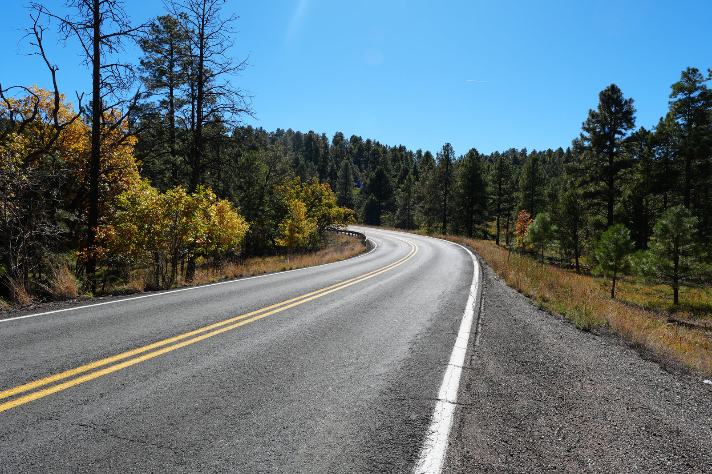
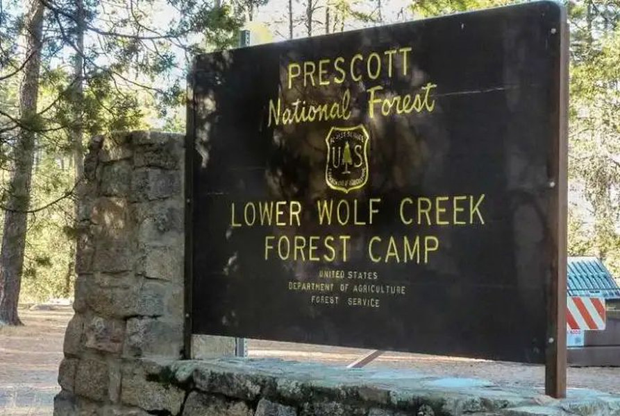
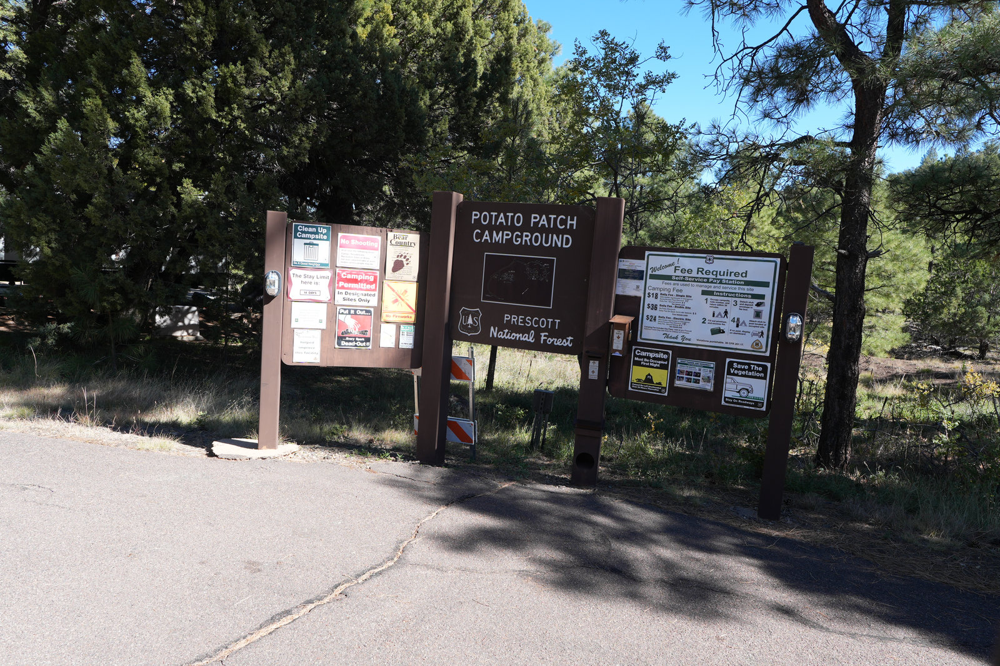
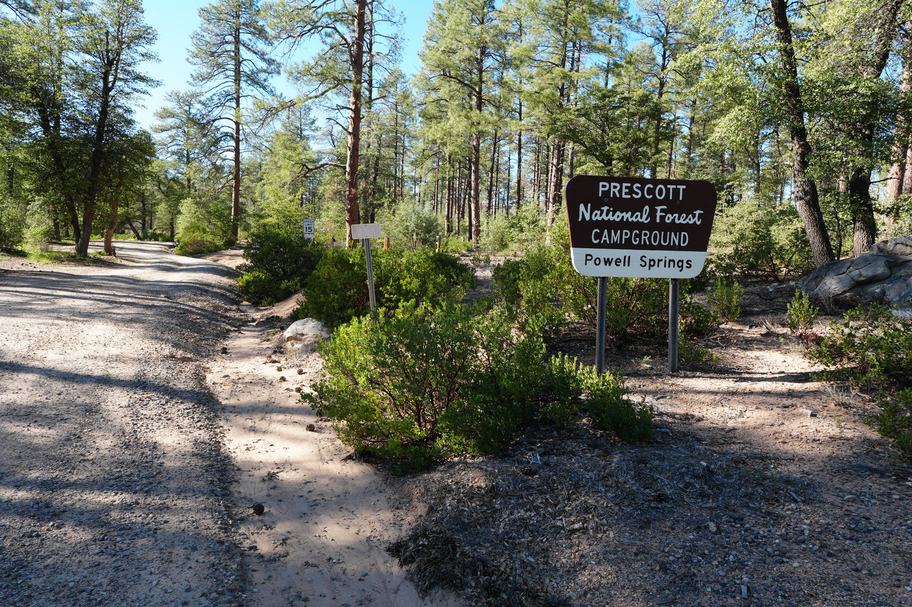

Mingus Lake Campground
The Prescott option that feels most like a mountain escape: cooler air, nearby overlooks, and a small-lake rhythm.
 By Chris Follin
By Chris FollinREGION GUIDE
Prescott is the middle lane between low-desert convenience and high-country escape. It is useful when you want pines, lakes, or Verde Valley access without committing to the longer Flagstaff or White Mountains push.
Prescott is useful when you want a greener, cooler-feeling trip without committing to the full Flagstaff, Rim, or White Mountains drive. The trick is not over-selling it as deep high country: Dead Horse is a comfort base, Mingus is the cooler ridge lane, and the smaller forest campgrounds are best when shade and low drama matter.

The Prescott option that feels most like a mountain escape: cooler air, nearby overlooks, and a small-lake rhythm.

The full-service Verde Valley base when paved loops, reservations, lagoons, showers, and easy access are the point.

A simple ponderosa-shade campground south of Prescott, better for calm routines than big scenic payoff.

A straightforward Mingus Mountain forest campground for shade, structure, and quick access to overlooks.

A smaller, less polished forest campground that works when you want a basic shaded overnight and fewer frills are fine.
Prescott-area camping is less about one famous campground and more about choosing the right lane: comfort, ridge air, ponderosa calm, or a small forest overnight.
| Camp | Best Use | Services | Watch For | Pick When |
|---|---|---|---|---|
| Mingus Lake | Cooler ridge air, small-lake walks, Jerome side trips, overlooks | Developed campground basics; limited cell | Summer storms, wind, no RV tank filling at hydrants | You want the Prescott region to feel most like mountain camping |
| Dead Horse Ranch | Verde Valley base, lagoons, family comfort, showers and hookups | Full-service state park campground | Summer heat, weekend demand, less forested feel | Amenities and easy logistics matter more than solitude |
| Lower Wolf Creek | Quiet ponderosa camp south of Prescott | Developed basics; bring water mindset | Narrow loops, smaller pads, dry conditions | You want a calmer forest base and a small setup |
| Potato Patch | Mingus Mountain shade, developed forest structure, overlooks | Developed campground; some electric caveats | Reservation pressure, summer storms, limited cell | You want shade and structure without overcomplicating the trip |
| Powell Springs | Small, quieter forest campground near Cottonwood/Jerome | Limited, first-come style expectations | Small site count, no hookups, seasonal closures/fire restrictions | You are fine with simple and do not need many services |
The Prescott area is at its best when you pick by trip tolerance instead of just clicking the nearest green patch.
COMFORT / SERVICES
Choose: you want showers, hookups, paved loops, lagoons, and easy Cottonwood/Jerome access. Skip: you want a cool pine forest or a remote-feeling campsite.
COOLER RIDGE
Choose: you want the higher, cooler, more scenic Prescott option. Skip: wind, summer storms, or limited service access will make the trip annoying.
PINE SHADE
Choose: you want a developed forest campground with shade and a straightforward setup. Skip: you need strong cell, reliable electricity everywhere, or a wide-open big-rig site.
QUIET SMALL SETUP
Choose: you have a compact camp and want a calmer ponderosa rhythm. Skip: you need roomy loops, large pads, or lots of built-out amenities.
SMALL / SIMPLE
Choose: you want a low-key wooded campground and can arrive prepared. Skip: you need potable water, hookups, many site options, or a guaranteed weekend spot.
FROM PHOENIX
Choose: this region when a shorter drive and manageable setup matter. Skip: it when the real goal is a deep summer temperature drop.
Use the individual pages when you want the practical details: photos, campground feel, shade, access, and whether the site solves the trip you are actually planning.
FROM PHOENIX
Prescott is useful when you want something greener than the desert without committing to the longer push to Flagstaff, the Rim, or the White Mountains.
ELEVATION
A Verde Valley site and a Mingus Mountain site can feel like different seasons. Check elevation, shade, and overnight lows before assuming it will be cool.
BEGINNERS
Developed roads, town proximity, and campground services make Prescott useful for people who want camp to feel manageable without staying in the low desert.